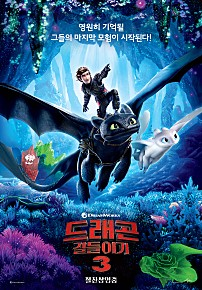
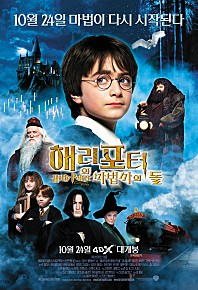

인생 영화 BEST 5
| 순위 | 제목 | 포스터 | 줄거리 | 바로가기 |
|---|---|---|---|---|
| 1 | 드래곤길들이기 |  |
영원히 기억될 그들의 마지막 모험이 시작된다! 영원한 친구 히컵과 투슬리스의 활약으로 사람과 드래곤이 공존하며 평화롭게 살아가는 버크섬. 새로운 드래곤 ‘라이트 퓨어리’를 쫓아간 투슬리스를 찾다가 히컵은 누구도 찾지 못했던 드래곤의 파라다이스 ‘히든월드’를 우연히 발견하게 된다. 하지만 평화도 잠시, 역대 최악의 드래곤 헌터 그리멜의 등장으로 드래곤들의 안전과 버크섬의 평화까지 위협받기 시작하는데… |
바로가기 |
| 2 | 인터스텔라 |  |
“우린 답을 찾을 거야, 늘 그랬듯이” 세계 각국의 정부와 경제가 완전히 붕괴된 미래가 다가온다. 지난 20세기에 범한 잘못이 전 세계적인 식량 부족을 불러왔고, NASA도 해체되었다. 이때 시공간에 불가사의한 틈이 열리고, 남은 자들에게는 이 곳을 탐험해 인류를 구해야 하는 임무가 지워진다. 사랑하는 가족들을 뒤로 한 채 인류라는 더 큰 가족을 위해, 그들은 이제 희망을 찾아 우주로 간다. 그리고 우린 답을 찾을 것이다. 늘 그랬듯이… |
바로가기 |
| 3 | 엽기적인 그녀 |
‘전반전’. 그녀와 저는 같은 문으로 함께 인천행 지하철을 타게 되씀미다. 취해서 비틀거리지만 안는다면 정말 매력저기고 갠차는 아가씨여쪄... 푸하하핫! 진짜 특이하다! 저는 그녀가 술에 취해서 배를 기대고 서있는 모습이 귀여워서 힐끔거리며 그녀를 계속 지켜보아씀미다. 그런데 몸을 미세하게 부르르 떨던 그녀가 왠지 불안해 보이더니만 마침내 우웨에엑~~~ 우웨엑~~ 좌르르르르~~~ 네, 그러씀미다! 그녀가 앞에 앉아 이떤 대머리 아저씨 머리 위에 순식간에 일을 친 거시여씀미다!! 순간 지하철안은 아수라장이 되고 절라 재미는 상황이었져. 진짜 일은 거기서부터 터지고야 말아씀미다. 오바이트를 시원하게 하던 그녀가 게슴치레한 눈빛으로 저를 보며 이러는 검미다! 자기야!~ 어어억~ 우욱~ 자기~ 웩~! 쿵... 이 여자 좋은 느낌이 듬니다. |
바로가기 | |
| 4 | 하울의 움직이는 성 |  |
소녀가 마법에 걸린 순간, 꽃미남 마법사의 성문이 열렸다! 어느 날, 영문도 모른 채 마녀의 저주로 인해 할머니가 된 소녀 '소피' 절망 속에서 길을 걷다가 거대한 마법의 성에 들어가게 된다. 그곳에서 자신과 마법사 하울의 계약을 깨주면 저주를 풀어주겠다는 불꽃악마 캘시퍼의 제안을 받고 청소부가 되어 ‘움직이는 성’에 머물게 되는데… |
바로가기 |
| 5 | 해리포터 |  |
해리는 해그리드의 지시대로 자신을 구박하던 이모네 집을 주저없이 떠나 호그와트행을 택한다. 런던의 킹스크로스 역에 있는 비밀의 9와 3/4 승장장에서 호그와트 특급열차를 탄 해리는 열차 안에서 같은 호그와트 마법학교 입학생인 헤르미온느 그레인저와 론 위즐리를 만나 친구가 된다. 이들과 함께 호그와트에 입학한 해리는, 놀라운 모험의 세계를 경험하며 갖가지 신기한 마법들을 배워 나간다. 또한 빗자루를 타고 공중을 날아다니며 경기하는 스릴 만점의 퀴디치 게임에서 스타로 탄생하게 되며, 용, 머리가 셋 달린 개, 유니콘, 켄타우루스, 히포그리프등 신비한 동물들과 마주치며 모험을 즐긴다. 그러던 어느 날 해리는 호그와트 지하실에 `영원한 생을 가져다주는 마법사의 돌'이 비밀리에 보관되어 있다는 것을 알게되고, 해리의 부모님을 죽인 볼드모트가 그 돌을 노린다는 사실도 알게 된다. 볼드모트는 바로 해리를 죽이려다 실패하고 이마에 번개모양의 흉터를 남긴 장본인이다. 해리는 볼드모트로부터 마법의 돌과 호그와트 마법학교를 지키기 위해 필사의 노력을 하는데... |
바로가기 |